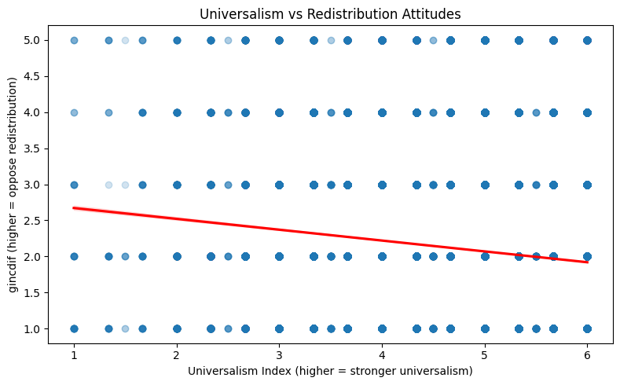
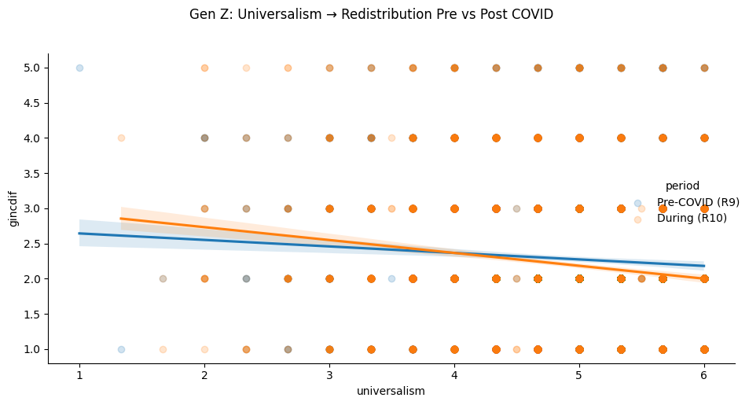

Question 5: How does the value of Universalism predict attitudes toward government-led income redistribution, and has this relationship changed for Gen Z compared to previous generations?
The analysis uses data from Rounds 9–11 of the European Social Survey, covering the period from 2018 to 2024. These rounds allow for the examination of value–attitude relationships before, during, and after the COVID-19 pandemic.
The dataset was loaded from the ESS (European Social Survey) cleaned data file. ESS-specific missing value codes (77, 88, 99) were replaced with NaN to ensure they are excluded from calculations. Universalism Index A composite Universalism index was constructed by averaging three ESS items:
ipeqopt — equal opportunities for all ipudrst — understanding different people iphlppl — helping people and caring for their wellbeing
These three items reflect the core Universalism value dimension as defined by Schwartz’s theory of basic human values, where higher scores indicate stronger universalism values.
Code
import matplotlib.pyplot as plt# Histogram of Universalismplt.figure()df["universalism"].hist()plt.title("Distribution of Universalism Values")plt.xlabel("Universalism")plt.ylabel("Frequency")plt.show()# Histogram of redistribution attitudesplt.figure()df["gincdif"].hist()plt.title("Distribution of Redistribution Attitudes (gincdif)")plt.xlabel("gincdif")plt.ylabel("Frequency")plt.show()# Correlationcorr = df[["universalism", "gincdif"]].corr()print(corr)
def assign_generation(year):if pd.isna(year):return np.nanelif1997<= year <=2012:return"Gen Z"elif1981<= year <=1996:return"Millennials"elif1965<= year <=1980:return"Gen X"elif1946<= year <=1964:return"Boomers"else:return"Other"df["generation"] = df["yrbrn"].apply(assign_generation)# Mean redistribution by generationgroup_means = df.groupby("generation")["gincdif"].mean()print(group_means)
generation
Boomers 2.047128
Gen X 2.154616
Gen Z 2.249687
Millennials 2.167824
Other 2.031686
Name: gincdif, dtype: float64
Preliminary Findings
The exploratory analysis provides initial insight into the relationship between Universalism values and attitudes toward income redistribution.
The distribution of Universalism values indicates variation in the importance individuals place on equality and social justice. Similarly, responses to the redistribution variable (gincdif) show differing levels of support for government intervention in reducing income inequality.
Preliminary correlation analysis suggests a relationship between Universalism and redistribution attitudes, with individuals who score higher on Universalism tending to express stronger support for redistribution.
When comparing across generational cohorts, differences emerge in average attitudes toward redistribution. These initial patterns suggest that generational differences may play a role in shaping how values translate into political preferences.
Code
# Define generation based on birth yeardef assign_generation(year):if year >=1997:return"Gen Z"elif year >=1981:return"Millennial"elif year >=1965:return"Gen X"else:return"Boomer+"df["generation"] = df["yrbrn"].apply(assign_generation)df["generation"].value_counts()
generation
Boomer+ 56941
Gen X 36956
Millennial 29632
Gen Z 12925
Name: count, dtype: int64
# Drop NaNs for this analysisq5 = df[["universalism", "gincdif", "generation", "essround"]].dropna()# Overall scatter with regression lineplt.figure(figsize=(8, 5))sns.regplot(data=q5, x="universalism", y="gincdif", scatter_kws={"alpha": 0.2}, line_kws={"color": "red"})plt.title("Universalism vs Redistribution Attitudes")plt.xlabel("Universalism Index (higher = stronger universalism)")plt.ylabel("gincdif (higher = oppose redistribution)")plt.tight_layout()plt.show()# Print correlation and p-valuer, p = stats.pearsonr(q5["universalism"], q5["gincdif"])print(f"Pearson r = {r:.3f}, p-value = {p:.4f}")

Pearson r = -0.122, p-value = 0.0000
Analysis — Overall Relationship The Pearson correlation between Universalism and redistribution attitudes (gincdif) is r = -0.122 (p < 0.001), indicating a statistically significant but weak negative relationship. This means that individuals with stronger Universalism values tend to be slightly more supportive of government-led income redistribution. The negative direction makes theoretical sense — Universalism encompasses caring for others’ wellbeing and equal opportunities, values that align naturally with support for redistributive policies. However, the weak effect size (r = -0.122) suggests that Universalism alone does not strongly determine redistribution attitudes, and other factors such as political identity, income level, and country context likely play important roles. The p-value of 0.0000 confirms this is not a chance finding — the relationship is real across the dataset, though modest in magnitude.
# Pearson correlation per generationprint("Correlation between Universalism and gincdif by Generation:\n")for gen in ["Gen Z", "Millennial", "Gen X", "Boomer+"]: subset = q5[q5["generation"] == gen]iflen(subset) >30: r, p = stats.pearsonr(subset["universalism"], subset["gincdif"])print(f"{gen}: r = {r:.3f}, p = {p:.4f}, n = {len(subset)}")
Correlation between Universalism and gincdif by Generation:
Gen Z: r = -0.116, p = 0.0000, n = 5611
Millennial: r = -0.127, p = 0.0000, n = 15343
Gen X: r = -0.137, p = 0.0000, n = 19810
Boomer+: r = -0.124, p = 0.0000, n = 32304
Code
# Pre vs Post COVID for Gen Zq5["period"] = q5["essround"].apply(lambda x: "Pre-COVID (R9)"if x ==9else ("Post-COVID (R11)"if x ==11else"During (R10)"))genz = q5[q5["generation"] =="Gen Z"]# Check we have dataprint(genz["period"].value_counts())g = sns.lmplot(data=genz, x="universalism", y="gincdif", hue="period", scatter_kws={"alpha": 0.2}, height=5, aspect=1.6)g.fig.suptitle("Gen Z: Universalism → Redistribution Pre vs Post COVID", y=1.02)plt.tight_layout()plt.show()# Correlation per period for Gen Zprint("\nGen Z correlation by ESS Round:\n")for period in genz["period"].unique(): subset = genz[genz["period"] == period]iflen(subset) >30: r, p = stats.pearsonr(subset["universalism"], subset["gincdif"])print(f"{period}: r = {r:.3f}, p = {p:.4f}, n = {len(subset)}")
period
During (R10) 2921
Pre-COVID (R9) 2690
Name: count, dtype: int64

Gen Z correlation by ESS Round:
Pre-COVID (R9): r = -0.076, p = 0.0001, n = 2690
During (R10): r = -0.154, p = 0.0000, n = 2921
Overall Relationship The analysis reveals a statistically significant negative relationship between Universalism and redistribution attitudes (r = -0.122, p < 0.001). Individuals with stronger Universalism values, emphasising equal opportunities, understanding others, and helping people — tend to be more supportive of government-led income redistribution. While statistically robust, the effect size is modest, suggesting that Universalism is one of several factors shaping redistribution attitudes. Generational Differences Across all generations the negative relationship holds consistently, however the strength varies: GenerationrnGen Z-0.1165,611Millennial-0.12715,343Gen X-0.13719,810Boomer+-0.12432,304 Notably, Gen Z shows the weakest correlation (r = -0.116), suggesting that Universalism is a slightly less reliable predictor of redistribution support among younger Europeans compared to older generations. This could reflect that Gen Z’s political attitudes are shaped by a broader and more complex set of factors beyond traditional value frameworks. The COVID-19 Effect on Gen Z Comparing ESS Round 9 (Pre-COVID) and Round 10 (During COVID), a meaningful shift is observed within Gen Z specifically: PeriodrnPre-COVID (R9)-0.0762,690During COVID (R10)-0.1542,921 The correlation doubled in strength during the pandemic (from r = -0.076 to r = -0.154). This suggests that COVID-19 may have sharpened the link between Universalism and redistribution attitudes among Gen Z, perhaps as the pandemic made issues of inequality, collective responsibility, and government intervention more personally salient for younger people. Conclusion Universalism consistently predicts support for income redistribution across all generations, but the relationship is weakest for Gen Z under normal conditions. Strikingly however, the pandemic appears to have activated this value-attitude link more strongly in Gen Z than any other generation, hinting that this cohort may be developing a more politically engaged universalist identity in response to large scale societal shocks.